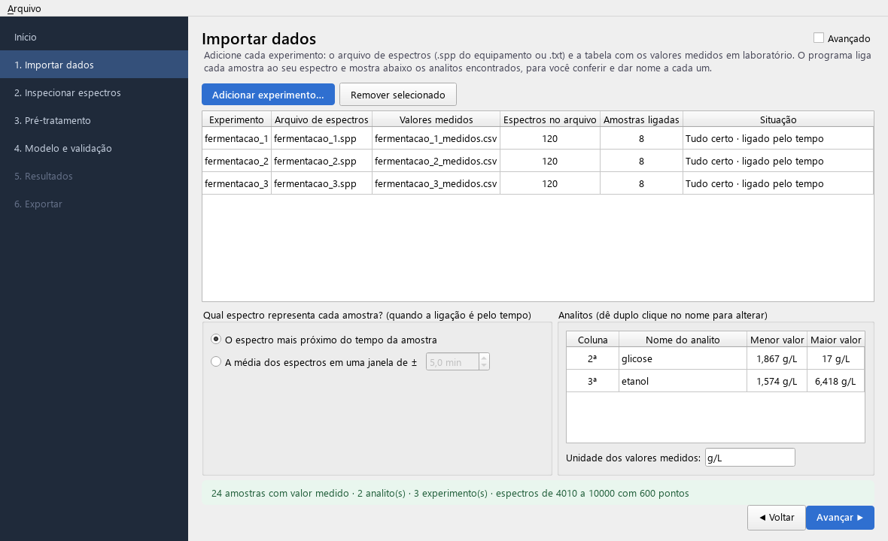
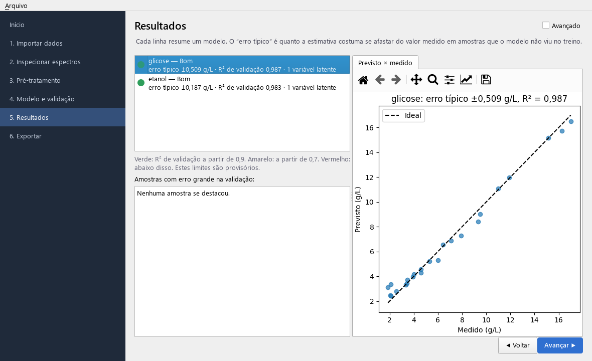
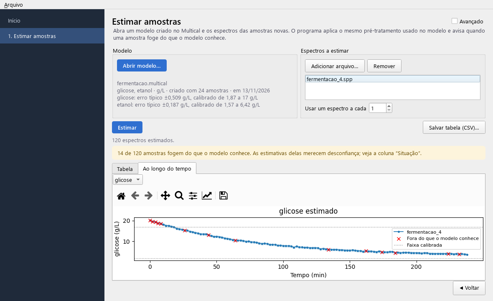

O Multical estima concentrações a partir de espectros. Primeiro você cria um modelo com espectros de
amostras cujo valor foi medido em laboratório; depois usa esse modelo para estimar amostras novas.
Instalar e abrir
Execute o instalador (Multical-…-instalador.exe) ou descompacte o arquivo .zip e abra
Multical.exe. Não é preciso ter Python nem senha de administrador.
Na primeira vez, o Windows pode mostrar o aviso “O Windows protegeu o computador”, porque o programa não tem
assinatura digital. Clique em Mais informações e depois em Executar assim mesmo.
O que ter em mãos
Espectros, um arquivo por experimento, em um destes formatos:
.spp: o arquivo gravado pelo equipamento, com todos os espectros do experimento, um a cada
poucos minutos;
.txt: arquivo de texto com o eixo espectral na primeira linha e um espectro por linha,
começando pelo tempo em minutos (como os arquivos _nonda.txt).
Valores medidos: uma tabela por experimento, em texto ou CSV (no Excel: Salvar como → CSV).
A primeira coluna é o tempo da amostra em minutos, contado do início da aquisição; as outras são os
analitos, sempre na mesma ordem. Uma primeira linha com os nomes é opcional. Pode haver qualquer número de
analitos.
Como o programa liga cada amostra ao seu espectro:
se o arquivo .txt tem um espectro para cada linha da tabela, a ligação é pela ordem das
linhas (primeira com primeira, e assim por diante);
nos arquivos .spp, e nos .txt com a série inteira, a ligação é pelo tempo.
A coluna Situação da tela de importação diz qual das duas foi usada em cada experimento.
Criar um modelo
Clique em Criar um modelo. As etapas ficam na barra à esquerda e só abrem quando a anterior está completa.
Importar dados. Clique em Adicionar experimento, escolha o arquivo de espectros e a tabela de
valores medidos, e repita para cada experimento. Quando a ligação é pelo tempo, você escolhe entre usar
o espectro mais próximo do tempo da amostra ou a média dos espectros em uma janela de alguns
minutos em volta dela.
O quadro Analitos lista uma linha para cada coluna de valores da tabela, com o menor e o maior valor
medido. Confira se cada coluna é o que você espera e dê duplo clique no nome para chamá-la como
quiser (glicose, etanol, pH…). Esses nomes aparecem em todas as telas, nos arquivos exportados e no modelo.
Inspecionar espectros. Confira se as curvas fazem sentido. Desmarque as amostras que não devem entrar
no modelo; nada é apagado dos arquivos.
Pré-tratamento. A receita padrão do laboratório já vem escolhida. O gráfico mostra os espectros antes
e depois.
Modelo e validação. Marque o que deseja estimar e clique em Treinar modelo.
Resultados. Veja se o modelo ficou bom (próxima seção).
Exportar. Escolha a pasta e clique em Exportar. O arquivo modelo.multical é o que
será usado para estimar amostras novas; as tabelas, as figuras e o relatório em PDF ficam na mesma pasta.

Importar dados: um experimento por linha; a última coluna diz como as amostras foram ligadas e se algo
precisa de atenção. No quadro Analitos, cada coluna da tabela recebe um nome.
Salvar e reabrir o projeto
Arquivo → Salvar projeto (Ctrl+S) grava um arquivo .mcproj com tudo o que você escolheu:
os experimentos, como as amostras são ligadas, os nomes dos analitos, as amostras retiradas, a receita, o modelo
e a validação. O título da janela mostra um * quando há alterações não salvas.
Arquivo → Abrir projeto (Ctrl+O), o botão Abrir um projeto salvo ou a lista de projetos
recentes da tela inicial trazem tudo de volta.
O projeto guarda as escolhas, não os espectros: os arquivos de dados precisam continuar onde estavam.
Se você guardar o projeto na mesma pasta dos dados (ou em uma pasta acima), pode mover ou copiar a pasta inteira
que o projeto continua abrindo.
O modelo treinado não fica no projeto. Depois de reabrir, clique em Treinar modelo de novo (leva
segundos) ou use o arquivo modelo.multical que você exportou.
Entender os resultados
Cada linha resume o modelo de um analito. O erro típico é quanto a estimativa costuma se afastar do valor
medido, em amostras que ficaram de fora do treino. O gráfico Previsto × medido deve ter os pontos perto da
linha tracejada.
Cor
Significado
Verde
Bom: o modelo acompanha bem os valores medidos.
Amarelo
Atenção: serve para acompanhar tendências, não para valores exatos.
Vermelho
Ruim: não use as estimativas. Fale com quem cuida dos modelos.
A lista Amostras com erro grande na validação aponta amostras que vale conferir: pode ter havido erro de
anotação, de medida ou de horário. Se for o caso, volte à etapa 2, desmarque a amostra e treine de novo.

Resultados: uma linha por analito, com a cor, o erro típico e o gráfico previsto × medido.
Usar um modelo pronto
Na tela inicial, clique em Usar um modelo pronto.
Clique em Abrir modelo e escolha o arquivo .multical. A tela mostra o que ele estima, o erro
típico e a faixa de valores com que foi criado.
Clique em Adicionar arquivo e escolha os espectros das amostras novas.
Clique em Estimar. Em séries muito longas, “Usar um espectro a cada N” deixa o cálculo mais rápido.
Veja a tabela e o gráfico ao longo do tempo, e clique em Salvar tabela (CSV) para abrir no Excel.
A coluna Situação diz se dá para confiar em cada estimativa:
dentro do que o modelo conhece: a amostra se parece com as usadas para criar o modelo.
espectro diferente dos usados para criar o modelo: algo mudou (outro meio, bolhas, sujeira na sonda,
outra fase do processo). Desconfie da estimativa.
fora da faixa calibrada: o valor estimado é menor ou maior do que tudo o que o modelo viu. Desconfie
da estimativa.

Estimar amostras: a faixa clara em volta da curva é o erro típico; os “x” vermelhos marcam as amostras
fora do que o modelo conhece.
Se algo der errado
Mensagem
O que fazer
“não contém espectros gravados”
O arquivo .spp está vazio (a aquisição não chegou a gravar). Use outro arquivo.
“amostra(s) sem espectro”
O tempo da amostra está fora do período gravado, ou a janela é estreita demais. Confira os tempos da tabela (em minutos) ou aumente a janela.
“faixa espectral diferente”
Os espectros não foram medidos na mesma faixa e resolução dos outros. Não podem ser usados juntos.
“há um valor que não é número”
Há uma célula vazia ou com texto na tabela de valores medidos. A mensagem diz a linha.
“As colunas da tabela … não são as mesmas”
Os analitos de uma tabela estão em outra ordem ou com outros nomes. Deixe todas as tabelas com as mesmas colunas, na mesma ordem.
“não está no formato esperado”
O arquivo .txt de espectros precisa ter o eixo na primeira linha e, em cada linha seguinte, o tempo e os valores do espectro.
“Arquivo não encontrado” ao abrir um projeto
Um arquivo de dados foi movido ou apagado. Coloque-o de volta, ou remova o experimento e adicione-o de novo.
Para quem cuida dos modelos
O interruptor Avançado, no alto da janela, mostra a edição da receita de pré-tratamento, a escolha do
modelo (PLS, PCR, SPA, SVR) e da validação, e as tabelas completas de resultados.
Métodos novos podem ser acrescentados sem alterar o programa: arquivos .py na pasta
plugins, ao lado do programa. O arquivo LEIA-ME.md dessa pasta descreve o formato de
cada tipo de método, e a pasta exemplos traz um arquivo pronto para cada caso.
Multical.exe --autoteste relatorio.txt verifica a instalação e grava o resultado no arquivo indicado.